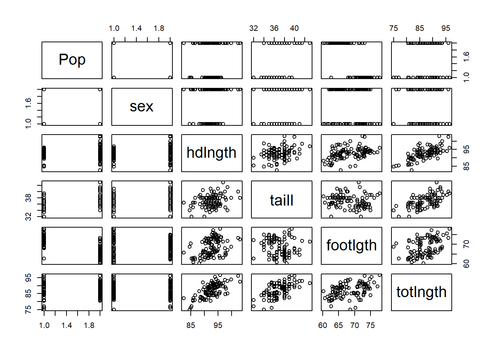
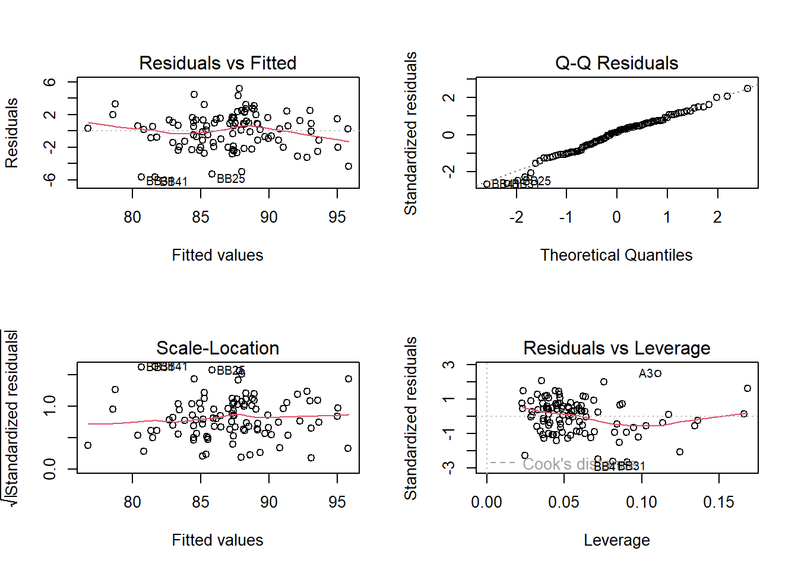
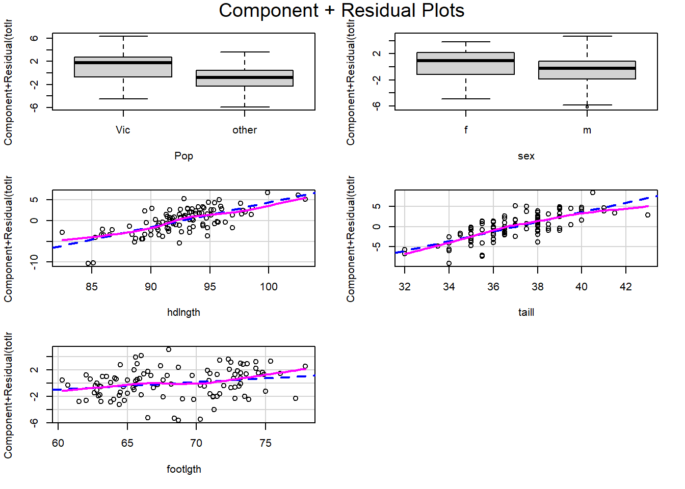

In this report we study the DAAG::possum data and build a regression model for total length, totlngth. The goal is not just to fit one model, but to show a typical workflow:
explore the data,
fit a reasonable additive model,
use diagnostics to look for problems,
add interactions when the plots suggest non-additive structure,
refit and interpret the final model.
15.1 Variables used in this report
We will focus on the following variables.
Variable
Description
Type
totlngth
Total length of the possum
Numerical, continuous
hdlngth
Head length
Numerical, continuous
taill
Tail length
Numerical, continuous
footlgth
Foot length
Numerical, continuous
Pop
Population group (Vic or other)
Categorical
sex
Sex (f or m)
Categorical
15.2 Phase 1: Set up the data
We keep only the variables needed for this analysis and remove the one observation with a missing footlgth.
library(DAAG)library(car)
Loading required package: carData
Attaching package: 'car'
The following object is masked from 'package:DAAG':
vif
Pop sex hdlngth taill footlgth
Vic :45 f:42 Min. : 82.50 Min. :32.00 Min. :60.30
other:58 m:61 1st Qu.: 90.70 1st Qu.:35.75 1st Qu.:64.60
Median : 92.80 Median :37.00 Median :68.00
Mean : 92.64 Mean :37.01 Mean :68.46
3rd Qu.: 94.75 3rd Qu.:38.00 3rd Qu.:72.50
Max. :103.10 Max. :43.00 Max. :77.90
totlngth
Min. :75.00
1st Qu.:84.00
Median :88.00
Mean :87.13
3rd Qu.:90.00
Max. :96.50
There are 103 complete observations in the analysis data set.
15.3 Phase 2: Exploratory data analysis
Before fitting a model, it is useful to see the marginal relationships among the variables.
pairs(dat)

For the numeric variables, the sample correlations are:
From these plots and correlations, a few patterns stand out:
totlngth is strongly related to both hdlngth and taill.
footlgth is positively associated with totlngth, but the relationship looks weaker than the first two.
hdlngth and footlgth are themselves related, so we should keep an eye on redundancy.
The scatterplots suggest that the effect of one body measurement may depend on another, which hints at possible interaction terms.
15.4 Phase 3: Start with an additive model
A natural first model is an additive regression using the two categorical variables and the three body measurements:
fit0 <-lm(totlngth ~ Pop + sex + hdlngth + taill + footlgth, data = dat)summary(fit0)
Call:
lm(formula = totlngth ~ Pop + sex + hdlngth + taill + footlgth,
data = dat)
Residuals:
Min 1Q Median 3Q Max
-5.6548 -1.4276 0.2505 1.3742 5.1821
Coefficients:
Estimate Std. Error t value Pr(>|t|)
(Intercept) -18.76944 6.72733 -2.790 0.00635 **
Popother -2.05254 1.06224 -1.932 0.05624 .
sexm -1.20332 0.46569 -2.584 0.01126 *
hdlngth 0.59981 0.07968 7.528 2.67e-11 ***
taill 1.20212 0.15111 7.955 3.34e-12 ***
footlgth 0.11249 0.11472 0.981 0.32927
---
Signif. codes: 0 '***' 0.001 '**' 0.01 '*' 0.05 '.' 0.1 ' ' 1
Residual standard error: 2.22 on 97 degrees of freedom
Multiple R-squared: 0.7479, Adjusted R-squared: 0.735
F-statistic: 57.57 on 5 and 97 DF, p-value: < 2.2e-16
This is already a fairly good model. In the additive fit:
hdlngth and taill are strongly significant,
sex is significant,
Pop is borderline,
footlgth is not significant as a main effect.
That last point does not necessarily mean footlgth is useless. It may be involved through interaction terms instead of a simple additive contribution.
15.4.1 Diagnostics for the additive model
par(mfrow =c(2, 2))plot(fit0)par(mfrow =c(1, 1))

The ordinary residual plots do not show a severe variance problem, but they are not very sensitive to hidden interaction structure. For that, component-plus-residual plots are often more informative.
par(mfrow =c(2, 2))crPlots(fit0)

par(mfrow =c(1, 1))
The partial residual plots suggest that the effects of taill and footlgth may change with hdlngth. In other words, the mean structure may not be purely additive.
15.5 Phase 4: Add interaction terms
Based on the plots and on the subject matter, we try the model
These plots suggest that the final model is reasonably adequate:
there is no strong funnel shape,
the Q-Q plot is acceptable for a sample of this size,
there is no obvious systematic pattern left in the residuals,
no single observation appears overwhelmingly dominant.
We can also check variance stability and outliers numerically.
ncvTest(fit_final)
Non-constant Variance Score Test
Variance formula: ~ fitted.values
Chisquare = 0.06765894, Df = 1, p = 0.79478
outlierTest(fit_final)
No Studentized residuals with Bonferroni p < 0.05
Largest |rstudent|:
rstudent unadjusted p-value Bonferroni p
BB25 -2.730972 0.0075414 0.77676
There is no strong evidence of non-constant variance, and no observation is flagged as an extreme outlier after Bonferroni adjustment.
For completeness, we can also look at VIF values.
vif(fit_final)
there are higher-order terms (interactions) in this model
consider setting type = 'predictor'; see ?vif
Pop sex c_hd c_tail c_foot c_hd:c_tail
5.842244 1.111156 1.849352 1.870956 5.333933 1.100088
c_hd:c_foot
1.210008
Because this model contains interactions, vif() warns about higher-order terms. The values are still moderate enough that multicollinearity does not look severe after centering.
totlngth ~ Pop + sex + c_hd * c_tail + c_hd * c_foot
15.9 Takeaway
This example illustrates an important modeling lesson. A predictor can look weak in a simple additive model and still become useful once interactions are introduced. In the possum data, footlgth is not important as a plain main effect, but it becomes relevant through its interaction with hdlngth.
So the final conclusion is:
total length increases with head length and tail length,
possums in the other population tend to be shorter than those in Vic,
male possums tend to be slightly shorter after adjusting for the other variables,
the effects of tail length and foot length depend on head length, so an interaction model is more appropriate than a purely additive one.